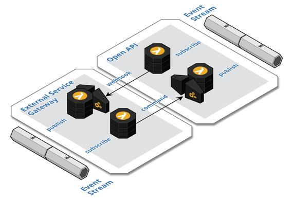

External Service Gateway
Integrate with external systems by encapsulating the inbound and outbound inter-system communication within a bounded isolated component to provide an anti-corruption layer that acts as a bridge to exchange events between the systems.
